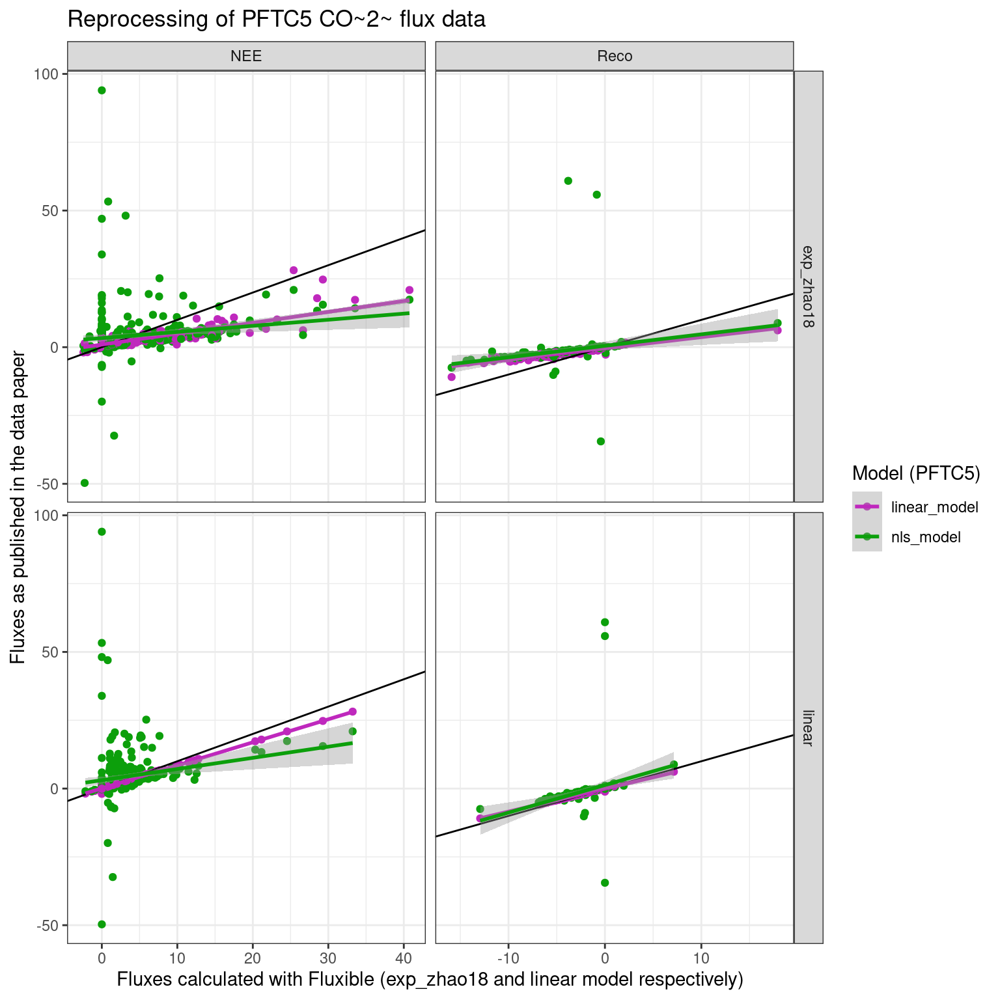
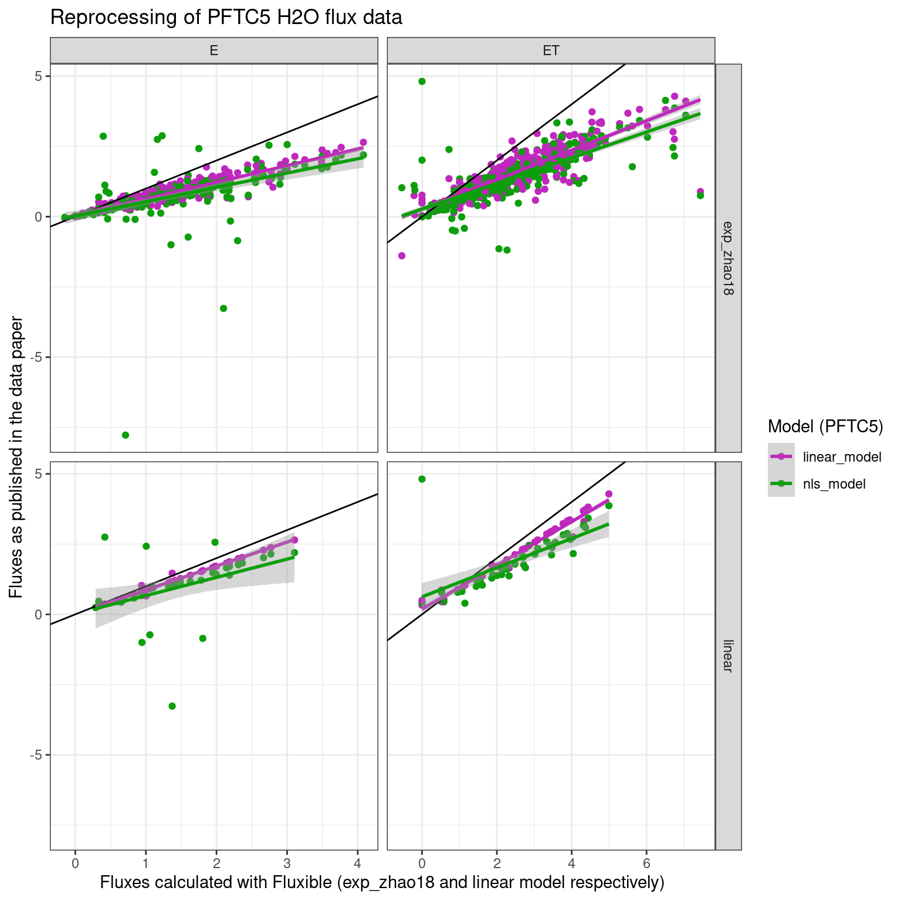

library(dataDownloader)
get_file("gs8u6",
"rawData/raw_c-flux",
"rawC-flux.zip",
"pftc5")
unzip("pftc5/rawC-flux.zip",
exdir = "pftc5/rawC-flux")Reprocessing PFTC5 fluxes
This report aims at reproducing the ecosystem fluxes (CO2 and H2O) processing presented in Halbritter et al. (2024).
Importing and reading the files
First, we import the data from OSF with dataDownloader::get_file.
Then we import the data with licoread::import7500.
library(licoread)
library(tidyverse)
pftc5_data_raw <- import7500(
"pftc5/rawC-flux/rawData/raw_tent-flux",
plotinfo = c("site", "treatment", "date", "plot_id", "trial")
)
pftc5_data_raw <- pftc5_data_raw |>
rename(filename = "f_fluxid") # f_fluxid will be re created by flux_matchTo reproduce the similar flux by flux cutting done during the PFTC5, we will recreate the field_record input. We can use the t_start and t_finish columns in the clean data for that, since they correspond to the cuts the team decided to apply. Note that this is also an example of how fluxible can be used to process data in a non homogenous way, would that be necessary.
# downloading clean data
get_file("gs8u6",
"c-flux",
"PFTC3_Puna_PFTC5_Peru_2018_2020_Cflux.csv",
"pftc5")
#> 'PFTC3_Puna_PFTC5_Peru_2018_2020_Cflux.csv' downloaded succesfully
pftc5_published_fluxes_co2 <- read_csv(
"pftc5/PFTC3_Puna_PFTC5_Peru_2018_2020_Cflux.csv",
show_col_types = FALSE # quiet!
)
pftc5_published_fluxes_co2 <- pftc5_published_fluxes_co2 |>
mutate(
date = ymd(paste(year, month, day)),
replicate = case_when(
flux == "Reco" ~ 1,
flux == "NEE" ~ 1,
flux == "NEE1" ~ 2,
flux == "NEE2" ~ 3,
flux == "NEE3" ~ 4
),
flux = case_when(
flux == "Reco" ~ "Reco",
flux == "NEE" ~ "NEE",
flux == "NEE1" ~ "NEE",
flux == "NEE2" ~ "NEE",
flux == "NEE3" ~ "NEE"
)
)
# normally the same cuts should have been applied to CO2 and H2O
pftc5_cuts <- pftc5_published_fluxes_co2 |>
select(date, flux, replicate, site, treatment, plot_id, t_start, t_finish)
# t_start and t_finish are relative time
# we need to fetch datetime from the raw data
pftc5_record <- pftc5_data_raw |>
mutate(
plot_id = as.integer(str_extract(plot_id, "\\d+")),
flux = case_when(
trial == "r" ~ "Reco",
trial == "p" ~ "NEE",
trial == "p1" ~ "NEE",
trial == "p2" ~ "NEE",
trial == "p3" ~ "NEE"
),
replicate = case_when(
trial == "r" ~ 1,
trial == "p" ~ 1,
trial == "p1" ~ 2,
trial == "p2" ~ 3,
trial == "p3" ~ 4
),
date = as_date(f_datetime)
) |>
select(f_start, date, flux, site, treatment, plot_id, replicate) |>
distinct() |>
drop_na(flux) |>
left_join(pftc5_cuts,
by = join_by(date, flux, site, treatment, plot_id, replicate)) |>
mutate(
start = f_start + t_start,
end = f_start + t_finish
) |>
select(!c(f_start, t_start, t_finish)) |> # to avoid confusion
arrange(start)
# Now the meta data are in pftc5_record,
# we remove them from pftc5_data to avoid confusion
# flux match crashes if columns are both in raw data and record
# this will be corrected in next version
pftc5_data <- pftc5_data_raw |>
select(!c(site, treatment, plot_id, trial, date, f_start, f_end))Processing with fluxible
We will fit both the linear and exponential model for comparison purpose.
library(fluxible)
pftc5_match <- flux_match(pftc5_data,
pftc5_record,
f_datetime = f_datetime,
start_col = start,
end_col = end)CO2
Wet air correction:
pftc5_match <- flux_drygas(pftc5_match, `CO2 umol/mol`, `H2O mmol/mol`)Exponential model
Fitting the model presented in Zhao, Hammerle, Zeeman, & Wohlfahrt (2018) .
pftc5_fits_exp_co2 <- flux_fitting(pftc5_match,
f_conc = `CO2 umol/mol_dry`,
fit_type = "exp_zhao18",
start_cut = 0,
end_cut = 0)Using fluxible::flux_quality to assess the quality of the dataset.
pftc5_flags_exp_co2 <- flux_quality(pftc5_fits_exp_co2,
f_conc = `CO2 umol/mol_dry`,
rsquared_threshold = 0.5)
#>
#> Total number of measurements: 609
#>
#> ok 441 72 %
#> zero 83 14 %
#> start_error 81 13 %
#> discard 4 1 %
#> force_discard 0 0 %
#> no_data 0 0 %
#> force_ok 0 0 %
#> force_zero 0 0 %
#> force_lm 0 0 %
#> no_slope 0 0 %Then plotting (in an external file) for a visual check. Because of the number of data, we will do it per site to make it lighter.
pftc5_flags_exp_co2 <- pftc5_flags_exp_co2 |>
drop_na(filename)
# some filename are NA because the start provided does not fall
# exactly on a row with concentration
pftc5_flags_exp_co2 |>
dplyr::filter(site == "ACJ") |>
flux_plot(f_conc = `CO2 umol/mol_dry`,
print_plot = FALSE,
output = "longpdf",
f_ylim_upper = 500,
f_ylim_lower = 350,
y_text_position = 430,
# f_facetid = c("f_fluxid", "filename"),
f_plotname = "ACJ_plot_exp_co2")
pftc5_flags_exp_co2 |>
dplyr::filter(site == "PIL") |>
flux_plot(f_conc = `CO2 umol/mol_dry`,
print_plot = FALSE,
output = "longpdf",
f_ylim_upper = 500,
f_ylim_lower = 350,
y_text_position = 430,
f_plotname = "PIL_plot_exp_co2")
pftc5_flags_exp_co2 |>
dplyr::filter(site == "QUE") |>
flux_plot(f_conc = `CO2 umol/mol_dry`,
print_plot = FALSE,
output = "longpdf",
f_ylim_upper = 500,
f_ylim_lower = 350,
y_text_position = 430,
f_plotname = "QUE_plot_exp_co2")
pftc5_flags_exp_co2 |>
dplyr::filter(site == "TRE") |>
flux_plot(f_conc = `CO2 umol/mol_dry`,
print_plot = FALSE,
output = "longpdf",
f_ylim_upper = 500,
f_ylim_lower = 350,
y_text_position = 430,
f_plotname = "TRE_plot_exp_co2")
pftc5_flags_exp_co2 |>
dplyr::filter(site == "WAY") |>
flux_plot(f_conc = `CO2 umol/mol_dry`,
print_plot = FALSE,
output = "longpdf",
f_ylim_upper = 500,
f_ylim_lower = 350,
y_text_position = 430,
f_plotname = "WAY_plot_exp_co2")Now let’s calculate the fluxes with fluxible::flux_calc.
pftc5_fluxes_exp_co2 <- flux_calc(pftc5_flags_exp_co2,
slope_col = f_slope_corr,
temp_air_col = Temperature,
setup_volume = 2197,
atm_pressure = pressure_atm,
plot_area = 1.44,
conc_unit = "ppm",
flux_unit = "umol/m2/s",
cols_keep = c(
"site", "treatment", "date", "plot_id",
"flux", "replicate"
))
#> Cutting data according to 'keep_arg'...
#> Averaging air temperature for each flux...
#> Creating a df with the columns from 'cols_keep' argument...
#> Calculating fluxes...
#> R constant set to 0.082057
#> Concentration was measured in ppm
#> Fluxes are in umol/m2/sLinear model
Fitting a linar model:
pftc5_fits_lm_co2 <- flux_fitting(pftc5_match,
f_conc = `CO2 umol/mol_dry`,
fit_type = "linear",
start_cut = 0,
end_cut = 0)Using fluxible::flux_quality to assess the quality of the dataset:
pftc5_flags_lm_co2 <- flux_quality(pftc5_fits_lm_co2,
f_conc = `CO2 umol/mol_dry`,
rsquared_threshold = 0.5)
#>
#> Total number of measurements: 609
#>
#> ok 486 80 %
#> start_error 81 13 %
#> zero 39 6 %
#> discard 3 0 %
#> force_discard 0 0 %
#> no_data 0 0 %
#> force_ok 0 0 %
#> force_zero 0 0 %
#> force_lm 0 0 %
#> no_slope 0 0 %Flux calculation:
pftc5_fluxes_lm_co2 <- flux_calc(pftc5_flags_lm_co2,
slope_col = f_slope_corr,
temp_air_col = Temperature,
setup_volume = 2197,
atm_pressure = pressure_atm,
plot_area = 1.44,
conc_unit = "ppm",
flux_unit = "umol/m2/s",
cols_keep = c(
"site", "treatment", "date", "plot_id",
"flux", "replicate"
))
#> Cutting data according to 'keep_arg'...
#> Averaging air temperature for each flux...
#> Creating a df with the columns from 'cols_keep' argument...
#> Calculating fluxes...
#> R constant set to 0.082057
#> Concentration was measured in ppm
#> Fluxes are in umol/m2/sH2O
We need to change the denomination of the fluxes, because now we work with H2O. Other than that, it is the same procedure and the same functions.
pftc5_match_h2o <- pftc5_match |>
mutate(
flux = str_replace_all(flux, c(
"NEE" = "ET",
"Reco" = "E"
))
)Wet air correction:
pftc5_match_h2o <- flux_drygas(pftc5_match_h2o, `H2O mmol/mol`, `H2O mmol/mol`)Exponential model
Fitting the model presented in Zhao et al. (2018).
pftc5_fits_exp_h2o <- flux_fitting(pftc5_match_h2o,
f_conc = `H2O mmol/mol_dry`,
fit_type = "exp_zhao18",
start_cut = 0,
end_cut = 0)Using fluxible::flux_quality to assess the quality of the dataset:
pftc5_flags_exp_h2o <- flux_quality(pftc5_fits_exp_h2o,
f_conc = `H2O mmol/mol_dry`,
rsquared_threshold = 0.5,
ambient_conc = 20, # the default is for CO2
error = 10)
#>
#> Total number of measurements: 609
#>
#> ok 584 96 %
#> start_error 17 3 %
#> zero 5 1 %
#> discard 3 0 %
#> force_discard 0 0 %
#> no_data 0 0 %
#> force_ok 0 0 %
#> force_zero 0 0 %
#> force_lm 0 0 %
#> no_slope 0 0 %Then plotting (in an external file) for a visual check:
pftc5_flags_exp_h2o |>
dplyr::filter(site == "ACJ") |>
flux_plot(f_conc = `H2O mmol/mol_dry`,
print_plot = FALSE,
output = "longpdf",
f_ylim_upper = 40,
f_ylim_lower = 0,
y_text_position = 20,
f_plotname = "ACJ_plot_exp_h2o")
pftc5_flags_exp_h2o |>
dplyr::filter(site == "PIL") |>
flux_plot(f_conc = `H2O mmol/mol_dry`,
print_plot = FALSE,
output = "longpdf",
f_ylim_upper = 40,
f_ylim_lower = 0,
y_text_position = 20,
f_plotname = "PIL_plot_exp_h2o")
pftc5_flags_exp_h2o |>
dplyr::filter(site == "QUE") |>
flux_plot(f_conc = `H2O mmol/mol_dry`,
print_plot = FALSE,
output = "longpdf",
f_ylim_upper = 40,
f_ylim_lower = 0,
y_text_position = 20,
f_plotname = "QUE_plot_exp_h2o")
pftc5_flags_exp_h2o |>
dplyr::filter(site == "TRE") |>
flux_plot(f_conc = `H2O mmol/mol_dry`,
print_plot = FALSE,
output = "longpdf",
f_ylim_upper = 40,
f_ylim_lower = 0,
y_text_position = 20,
f_plotname = "TRE_plot_exp_h2o")
pftc5_flags_exp_h2o |>
dplyr::filter(site == "WAY") |>
flux_plot(f_conc = `H2O mmol/mol_dry`,
print_plot = FALSE,
output = "longpdf",
f_ylim_upper = 40,
f_ylim_lower = 0,
y_text_position = 20,
f_plotname = "WAY_plot_exp_h2o")Flux calculations:
pftc5_fluxes_exp_h2o <- flux_calc(pftc5_flags_exp_h2o,
slope_col = f_slope_corr,
temp_air_col = Temperature,
setup_volume = 2197,
atm_pressure = pressure_atm,
plot_area = 1.44,
conc_unit = "mmol/mol",
flux_unit = "mmol/m2/s",
cols_keep = c(
"site", "treatment", "date", "plot_id",
"flux", "replicate"
))
#> Cutting data according to 'keep_arg'...
#> Averaging air temperature for each flux...
#> Creating a df with the columns from 'cols_keep' argument...
#> Calculating fluxes...
#> R constant set to 0.082057
#> Concentration was measured in mmol/mol
#> Fluxes are in mmol/m2/sLinear model
Fitting a linar model:
pftc5_fits_lm_h2o <- flux_fitting(pftc5_match_h2o,
f_conc = `H2O mmol/mol_dry`,
fit_type = "linear",
start_cut = 0,
end_cut = 0)Using fluxible::flux_quality to assess the quality of the dataset:
pftc5_flags_lm_h2o <- flux_quality(pftc5_fits_lm_h2o,
f_conc = `H2O mmol/mol_dry`,
rsquared_threshold = 0.5,
ambient_conc = 40, # the default is for CO2
error = 20)
#>
#> Total number of measurements: 609
#>
#> start_error 526 86 %
#> ok 78 13 %
#> discard 3 0 %
#> zero 2 0 %
#> force_discard 0 0 %
#> no_data 0 0 %
#> force_ok 0 0 %
#> force_zero 0 0 %
#> force_lm 0 0 %
#> no_slope 0 0 %Flux calculations:
pftc5_fluxes_lm_h2o <- flux_calc(pftc5_flags_lm_h2o,
slope_col = f_slope_corr,
temp_air_col = Temperature,
setup_volume = 2197,
atm_pressure = pressure_atm,
plot_area = 1.44,
conc_unit = "mmol/mol",
flux_unit = "mmol/m2/s",
cols_keep = c(
"site", "treatment", "date", "plot_id",
"flux", "replicate"
))
#> Cutting data according to 'keep_arg'...
#> Averaging air temperature for each flux...
#> Creating a df with the columns from 'cols_keep' argument...
#> Calculating fluxes...
#> R constant set to 0.082057
#> Concentration was measured in mmol/mol
#> Fluxes are in mmol/m2/sComparison
CO2
Let’s format the fluxible fluxes in a similar way.
pftc5_fluxible_fluxes_co2 <- pftc5_fluxes_exp_co2 |>
bind_rows(pftc5_fluxes_lm_co2) |>
mutate(
fluxible_flux = -f_flux # the opposite convention was used for PFTC5
) |>
drop_na(flux) # removing amb measurements
pftc5_published_fluxes_co2 <- pftc5_published_fluxes_co2 |>
pivot_longer(
c(linear_model, nls_model),
values_to = "published_fluxes",
names_to = "model"
)Putting them together:
pftc5_fluxes_comparison_co2 <- left_join(pftc5_published_fluxes_co2,
pftc5_fluxible_fluxes_co2,
by = join_by(date, flux,
site, treatment,
plot_id, replicate),
relationship = "many-to-many")
H2O
Let’s format the fluxible fluxes in a similar way.
pftc5_fluxible_fluxes_h2o <- pftc5_fluxes_exp_h2o |>
bind_rows(pftc5_fluxes_lm_h2o) |>
rename(
fluxible_flux = "f_flux"
) |>
drop_na(flux) # removing amb measurementsImporting the published dataset:
get_file("gs8u6",
"c-flux",
"PFTC3_Puna_PFTC5_Peru_2018_2020_wflux.csv",
"ex_data/li7500")
#> Creating missing path 'ex_data/li7500'
#> 'PFTC3_Puna_PFTC5_Peru_2018_2020_wflux.csv' downloaded succesfully
pftc5_published_fluxes_h2o <- read_csv(
"ex_data/li7500/PFTC3_Puna_PFTC5_Peru_2018_2020_wflux.csv",
show_col_types = FALSE # quiet!
)
pftc5_published_fluxes_h2o <- pftc5_published_fluxes_h2o |>
mutate(
date = ymd(paste(year, month, day)),
replicate = case_when(
flux == "E" ~ 1,
flux == "ET" ~ 1,
flux == "ET1" ~ 2,
flux == "ET2" ~ 3,
flux == "ET3" ~ 4
),
flux = case_when(
flux == "E" ~ "E",
flux == "ET" ~ "ET",
flux == "ET1" ~ "ET",
flux == "ET2" ~ "ET",
flux == "ET3" ~ "ET"
)
)
pftc5_published_fluxes_h2o <- pftc5_published_fluxes_h2o |>
pivot_longer(
c(linear_model, nls_model),
values_to = "published_fluxes",
names_to = "model"
)Putting them together:
pftc5_fluxes_comparison_h2o <- left_join(pftc5_published_fluxes_h2o,
pftc5_fluxible_fluxes_h2o,
by = join_by(date, flux,
site, treatment,
plot_id, replicate),
relationship = "many-to-many")
Possible explanation for the differences
- Problem detected: some measurements overlap. It means the logger was off at some point, or the cutting in the clean data has errors.
- Since the nls_model is an exponential model without linear term, it gives unrealistic estimates when fitted to a flux that has no curvature (Hüppi et al., 2018; Pedersen, Petersen, & Schelde, 2010). Fluxible solves this issue by using the model presented in Zhao et al. (2018), which is also an exponential but contains a linear term allowing it to fit linear data.
- The fluxes with hight published values and zero with fluxible are good examples of the behaviour of the nls model with linear data. Looking at the plot, it is evident that those fluxes are close to zero. In fluxible, they get flagged for as “bad fit”, but since there is no change of concentration over time they get replaced by zero instead of getting discarded.
- Possible explanation for the over estimation of the exponential model in fluxible compared to the linear model can be found in Kutzbach et al. (2007) .
- At this point I don’t have a good hypothesis for the slight over estimation with fluxible when using a linear model. If some of those fluxes are the overlapping ones, then they were fitted on a shorter time or they included data from another measurement.
References
Halbritter, A. H., Vandvik, V., Cotner, S. H., Farfan-Rios, W., Maitner, B. S., Michaletz, S. T., … Enquist, B. J. (2024). Plant trait and vegetation data along a 1314 m elevation gradient with fire history in Puna grasslands, Perú. Scientific Data, 11(1), 225. doi: 10.1038/s41597-024-02980-3
Hüppi, R., Felber, R., Krauss, M., Six, J., Leifeld, J., & Fuß, R. (2018). Restricting the nonlinearity parameter in soil greenhouse gas flux calculation for more reliable flux estimates. PLOS ONE, 13(7), e0200876. doi: 10.1371/journal.pone.0200876
Kutzbach, L., Schneider, J., Sachs, T., Giebels, M., Nykänen, H., Shurpali, N. J., … Wilmking, M. (2007). CO2 flux determination by closed-chamber methods can be seriously biased by inappropriate application of linear regression. Biogeosciences, 4(6), 1005–1025. doi: 10.5194/bg-4-1005-2007
Pedersen, A. R., Petersen, S. O., & Schelde, K. (2010). A comprehensive approach to soil-atmosphere trace-gas flux estimation with static chambers. European Journal of Soil Science, 61(6), 888–902. doi: 10.1111/j.1365-2389.2010.01291.x
Zhao, P., Hammerle, A., Zeeman, M., & Wohlfahrt, G. (2018). On the calculation of daytime CO2 fluxes measured by automated closed transparent chambers. Agricultural and Forest Meteorology, 263, 267–275. doi: 10.1016/j.agrformet.2018.08.022